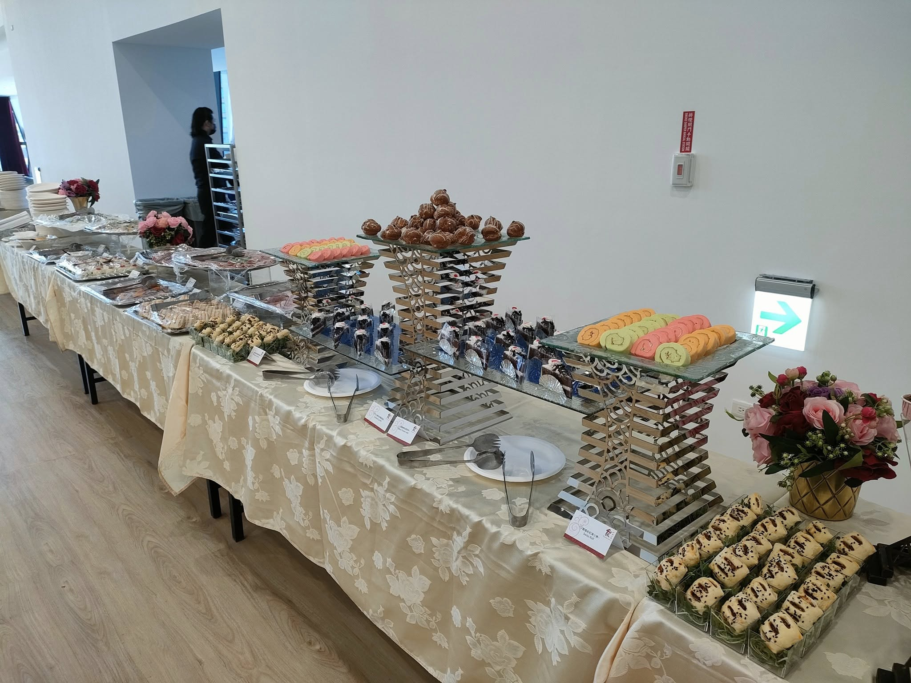

企業外燴——不管是尾牙春酒、VIP 貴賓接待，還是品牌發表會餐飲——難度往往比私人家宴高出許多。原因在於企業活動通常有更嚴格的時間表、更多的利害關係人（老闆、行銷部門、貴賓）、以及對「不能出錯」的高度要求。一個環節delay，可能牽動整場活動的流程；一道菜色不符合貴賓飲食習慣，可能造成商務上的尷尬。這篇文章整理舒苑團隊在 600+ 場企業實績中，歸納出來的規劃眉角。
第一步永遠是釐清活動性質與目的——是尾牙春酒重視熱鬧氣氛，還是 VIP 接待重視精緻與隱私？出席人數、預算範圍、是否有貴賓飲食禁忌（素食、過敏原、宗教飲食限制）都要在這個階段確認清楚。建議至少提前 3-4 週開始規劃，尤其是尾牙旺季（12 月至隔年 2 月），主廚檔期與食材供應都會提前被預訂。
企業場合的菜單設計邏輯，與家宴完全不同。尾牙春酒通常會設計「話題性菜色」（例如現切龍蝦、和牛料理站），讓員工有拍照與話題性；VIP 接待則更重視「精緻與效率」的平衡，避免佔用貴賓過多商務洽談時間。這個階段也要確認場地動線——出餐口位置、電力供應、是否有明火限制，這些都會影響現場設備的配置方式。
企業活動最重視「準時」與「不出錯」。舒苑團隊會在活動前一天完成食材確認與人力調度，活動當天提前 2-3 小時進場佈置，並安排專人與活動主辦方對接時間表，確保餐飲環節與活動流程（例如致詞、抽獎、表演）緊密配合，不搶戲也不掉鏈。
話題導向型：把預算集中在 1-2 道「亮點菜色」（如龍蝦、和牛現切秀），其餘菜色維持標準規格，適合重視員工話題與拍照分享的尾牙春酒。
均衡型：預算平均分配在每一道菜，維持整體菜單的一致水準，適合 VIP 接待或品牌發表會這類重視「整體印象」而非單一亮點的場合。
服務導向型：把較多預算放在人力與服務細節（如專人桌邊服務、客製化菜單卡），適合董事長宴請等重視尊榮感受的小型場次。
沒有預留備案時間：企業活動流程常因致詞、表演時間延長而順延，建議餐飲環節保留 15-30 分鐘的彈性緩衝，避免出菜時間與活動流程衝突。
忽略貴賓飲食禁忌的最後確認：建議在活動前 1-2 天，再次與主辦方確認最終出席貴賓名單是否有特殊飲食需求變動，避免臨時狀況。
低估場地限制：部分企業場地（如辦公大樓會議室）可能有明火限制或電力負載上限，建議提前現場勘查，讓主廚團隊能提前準備替代設備方案。
從品牌發表會、VIP 貴賓接待、董事長宴請、記者會餐飲，到尾牙春酒，舒苑團隊提供從菜單規劃、現場執行到餐後清潔的一條龍服務。若您正在規劃企業活動的餐飲環節，建議提前聯繫討論，讓主廚有充足時間依照您的活動性質設計最合適的方案。更多內容可參考 服務項目 頁面。
主廚團隊將依照活動性質，為您提供專屬宴會建議。